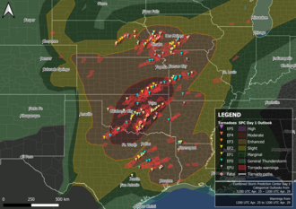
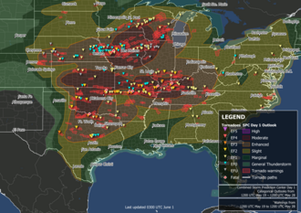
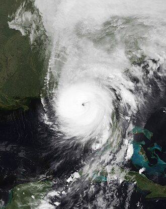
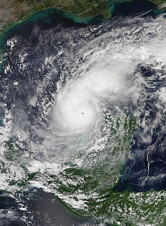

Is the media exagerrating the threat of extreme weather?
The weather can vary drasticly on a day to day basis so we rely on different forms of media in order to be informed about what it is doing.
At certain times of the year though you can be caught up in big headlines of extreme weather events occuring like tornado outbreaks or major hurricanes.
You see headlines about how many people are affected or even killed from them.
While some people aren't very concerned about the risk of this happening to them, others (especially who live in risk areas) can be extremely worried by
getting affected by them. However, you may live in a risk area and never be affected by any of these. For example I live within Tornado Alley, and have yet to see a tornado!
While I haven't seen a tornado, I have seen tons of headlines telling me I should be worried about them. Is extreme weather being somewhat exaggerated for attention,
or have I just been lucky? While exagerrating headlines may sound bad, there could also potentially bring a benefit with it. That benefit being bringing awareness
to the situation.
Below is a timeline showing recent (this year) events that have occured, and in that timeline we'll compare what the headlines were saying vs. what actually happened.
April 25-28 Tornado Outbreak
This tornado outbreak occured throughout the plains affecting many people.
(need sources and more data) What is found so far is media focuses on the absolute destruction from this event, and touch on the fact that major outbreaks
like this are becoming more and more common.

May 19-27 Tornado Outbreak

Hurricane Helene
On Septemeber 24, a storm formed within the Gulf of Mexico as Tropical Storm Helene. Only two days later
the storm would form not only into an hurricane, but a category 4 one. On the evening of September 26 it made landfall within the big bend of Florida and would
travel north-eastward affecting millions of people. Different news stations reported this storm as dropping "once in a lifetime rainfall amounts"
and used terms like "freak storm". Using terminology like this implies a large scale hurricane like this is very rare and unique.
The only problem with that is looking at the data, storms as devastating as Helene are 400 times more likely to form
within the location and time Helene did (https://electrek.co/2024/10/03/climate-change-made-helene-200x-more-likely-but-just-3-of-tv-news-said-so/) (find a better source).
Therefore, there is some misconception. While using this terminology can be good for people, especially within the path of it, to be more likely to learn mroe about the storm.
They don't take the time to talk about the risk of events like this happening accurately.

Hurricane Milton
This storm had intense headlines when it was at it's peaked. (information about when it formed and its blow up to
high level category 5). Though with what it did, there was a little bit of misinformation with it. The headlines lead to people believing it would make
landfall at that level and devastate Florida. That is not true, what happened is it greatly weakened and made landfall as a still strong category 3. (need sources to back up, or change information.)

Sources: Images taken from wikipedia.
Hurricane Helene Sources: https://electrek.co/2024/10/03/climate-change-made-helene-200x-more-likely-but-just-3-of-tv-news-said-so/
April 25-28 sources: https://www.foxweather.com/weather-news/deadly-tornado-outbreak-oklahoma-iowa-nebraska-april-2024
Hurricane Milton sources:
May 19-27 sources: